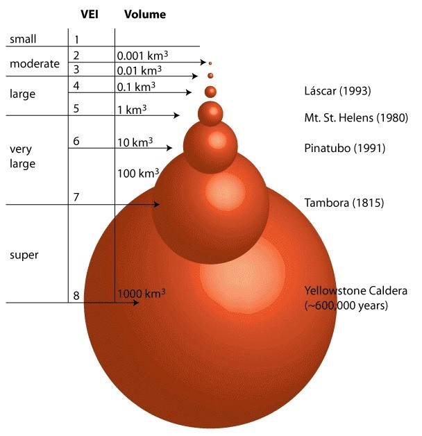
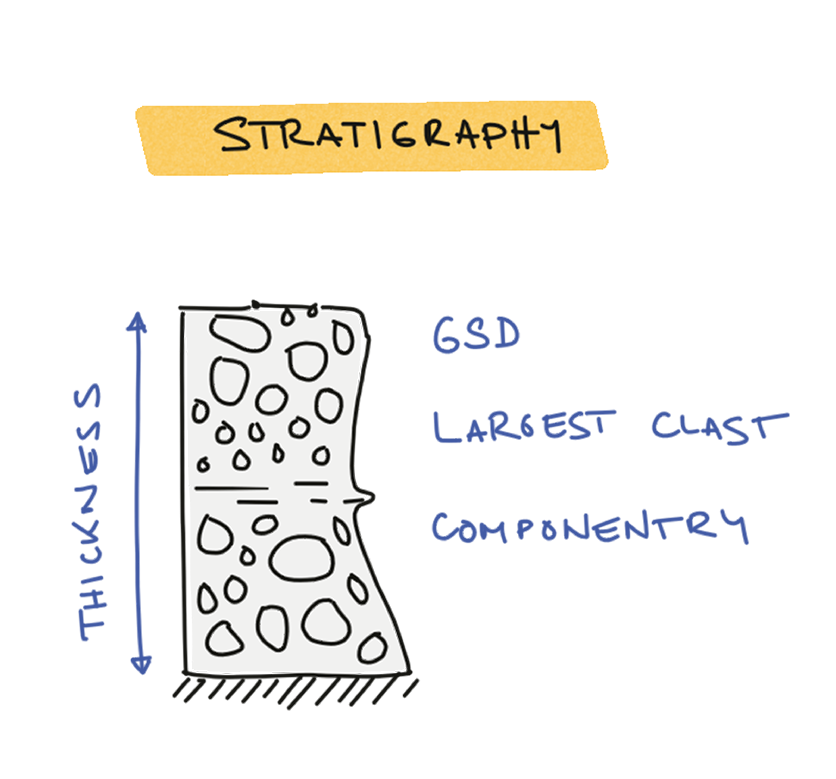
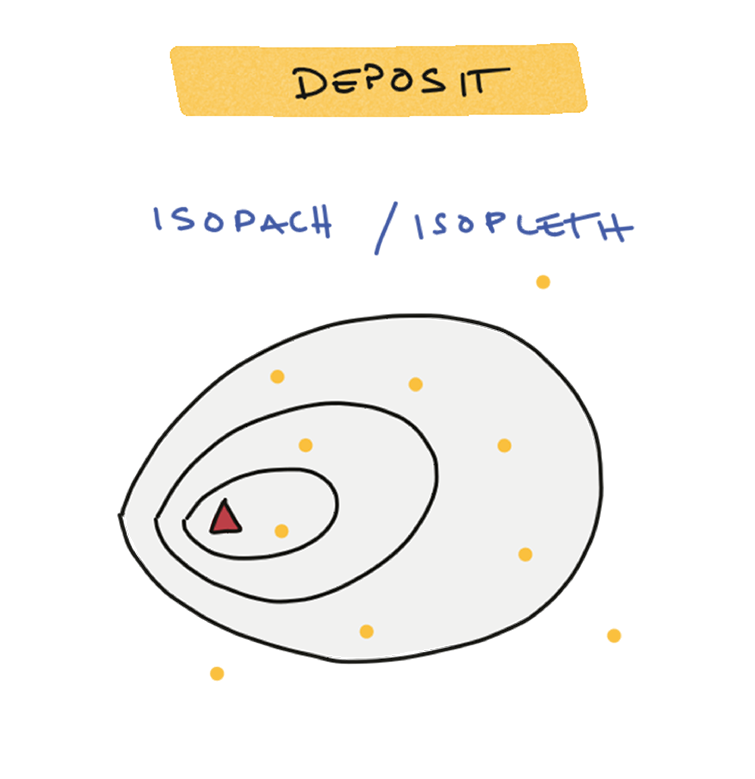
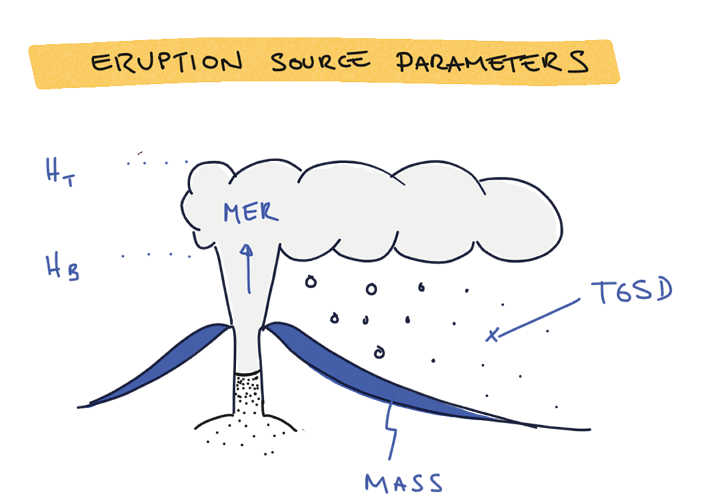
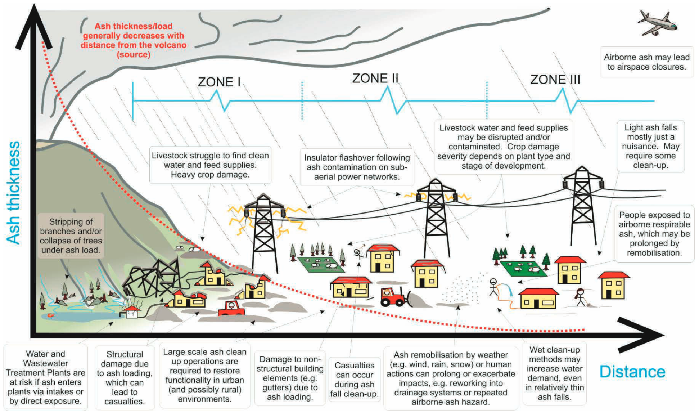

Probabilistic hazard assessment for tephra accumulation
Tephra was first defined by Sigurður Þórarinsson1 following the 1947 eruption of Hekla volcano in Iceland as:
Tephra
The fragmental material produced by a volcanic eruption regardless of composition, fragment size, or emplacement mechanism.
Tephra deposits are widespread deposits generated by explosive volcanic eruption (see Figures 1-5 for examples). The objective of this module explore what is tephra, why are tephra deposits important and how they can impact populations and assets around volcanoes. Later in the module, we will learn how to model the transportation and deposition of tephra, and how to quantify their associated hazards.
Objectives
The objective of this lessons are to understand:
- What are tephra deposits.
- Why they are relevant and what can we learn from them.
- How they can impact communities.
Tephra deposits
In the field, tephra deposits generally appear as unconsolidated pyroclastic material that are able to blanket the existing topography. Deposits follow the direction of the dominant wind during the eruptions. As a consequence, a short lasting eruption occurring in a single dominant wind pattern might elongate in a unique direction, whereas long(er)-lasting eruptions can be affected by variable wind profiles and present a less conspicuous unique dispersal direction. With distance from the vent:
- The thickness of deposits decrease exponentially.
- Their grain-size distributions become finer.
Below are some examples of tephra deposits.

Size classification of tephra
Tephra fragments - or pyroclasts - can be classified in three categories according to their size:
- Ash – particles smaller than 2 mm in diameter.
- Lapilli – between 2 and 64 mm in diameter.
- Bombs or blocks – larger than 64 mm in diameter.
Why are tephra deposits important?
Tephra deposits are a direct reflection of the eruptive conditions occurring in the plume. By studying, mapping and characterizing these deposits, we can reconstruct the dynamics of eruption and estimate important eruption source parameters (ESP). Following the general idea that "the past is the key to the future", this ability is critical to reconstruct the eruptive history of volcanic systems from their stratigraphic record and, in turn, constrain their potential future activity.
Field-based methods
For recent eruption, direct observation methods can infer ESP in near-real time (e.g., satellite imagery for plume height, infrasound for mass eruption rate (MER)). However, field-based approaches remain the main approach to extract knowledge from old tephra deposits.

Volcanic explosivity index

The Volcanic explosivity index2 - or VEI - is a "measure" of eruption size based on the volume of tephra produced during an eruption. Despites its limitations (i.e., it is a stepwise measure and largely aggregates small but frequent eruptive styles into a non-explosive category), it remains the most commonly used metrics. Bear in mind that its primary purpose was communication, and it does a great job at it. For measures that better account for the dynamics of eruption, the combined use of magnitude and intensity3 might be more appropriate. More information can be found here.
Field mapping toolbox
These sketches provide an overview of the general process followed to characterize tephra deposits.

As we start the field characterisation of a deposit, we first look for outcrops where a given deposit is complete. At the outcrop level, we will start directly measuring a number of different physical quantities including:
- The deposit thickness.
- The diameter of the largest clast(s) observed at this location.
- The grain-size distribution.
- The componentry (e.g., ratio of juvenile vs lithics components, presence of free crystals or oxydised particles).
Note that following Steno's laws of superposition, the base of the outcrop is older than the top. Therefore, any variability of these parameters in the vertical section indicates a change in time (either of eruption dynamics or wind conditions).

As a sufficient number of outcrops is discovered and mapped, we can start plotting them on a map and contour the spatial extent of these properties. Two maps greatly interest us:
- Isopach maps contour the deposit thickness, which can be used to compute the deposit volume and associated VEI / magnitude.
- Isopleth maps contour the largest clast that is observed at a given outcrop, which can be used to estimate the plume height and associated MER and intensity.

This process is the foundation of the field characterization of tephra deposits and help quantifying ESP4.
This workflow summarises the entire field-based characterisation of ESPs from tephra deposits.
flowchart LR
A3 --> A32[VEI]:::clasf
A4 --> A42[Magnitude]:::clasf
A1[Thickness]:::field ==> A2[Isopach] ==> A3[Volume]:::esp ==> A4[Mass]:::esp ==> F[Eruption duration]:::esp
B1[Largest clast]:::field ==> B2[Isopleth] ==> B3[Plume height]:::esp ==> B4[Mass eruption rate]:::esp ==> F
A2 --> A22["Thinning" rate]:::clasf
B2 --> B22["Fining" rate]:::clasf
C[Bulk deposit density]:::field -.-> A4
D[Wind speed] -.-> B4
B4 --> B42[Intensity]:::clasf
classDef field fill:#cbdc3850, stroke:#cbdc38;
classDef esp fill:#1f78b450, stroke:#1f78b4;
classDef clasf fill:#984ea350, stroke:#984ea3;flowchart LR
subgraph Legend [" "]
l1[Field/outcrop measurement]:::field
l2[Eruption source parameter]:::esp
l3[Classification parameter]:::clasf
end
classDef field fill:#cbdc3850, stroke:#cbdc38;
classDef esp fill:#1f78b450, stroke:#1f78b4;
classDef clasf fill:#984ea350, stroke:#984ea3;
What impacts can be caused by tephra?
Tephra hazard
We will focus here on airborne tephra, considering the fraction that is entrained in the convective plume and advected by the wind and ignoring the hazard associated with pyroclastic density currents (PDC).
The impact of tephra can be classified in two broad categories:
- The atmospheric dispersal can impact the air traffic as demonstrated by the 2010 and 2011 eruptions of Eyjafjallajökull (Iceland) and Cordón Caulle (Chile), respectively. In this case, the main hazard impact metrics (HIM) is the atmospheric concentration of fine ash in the atmosphere (usually expressed in \(mg/m^3\)). Since modeling the atmospheric dispersal requires 3D models with high computing costs, we won't consider this aspect here.
- The ground sedimentation impacts populations and assets at the surface of the Earth, and the main hazard impact metrics are a combination of the mass load of tephra (usually expressed in \(kg/m^2\)) and the grain-size distribution of the deposit. This will be the focus of this exercise.
Deposit load vs thickness
Measuring the mass load in the field is time consuming, and we are therefore often limited to measuring the outcrop's thickness. For simplicity throughout this exercise, we will consider that mass load and thickness can be interchanged using a bulk density of 1000 \(kg/m^3\). So, for instance:
- 1 \(mm\) = 1 \(kg/m^2\).
- 1 \(cm\) = 10 \(kg/m^2\).
- 10 \(cm\) = 100 \(kg/m^2\).
- 1 \(m\) = 1000 \(kg/m^2\).
A spatially-dependent hazard intensity
Tephra deposits can extend 10's, 100's to 1000's of km away from the source. With distance from the vent, their thickness decrease exponentially and they gradually get finer. The widespread nature of tephra deposits and the spatial evolution of their associated hazard metrics make the associated impacts and risk difficult to predict5.
Impacts can be broadly characterised into 3 zones as a function of the distance from the vent 6:
- Zone 1: Destructive and immediately life-threatening.
- Zone 2: Damaging and/or disruptive.
- Zone 3: Disruptive and/or a nuisance.

A relative distance
The distance acting as a limit between these zones is relative and varies with the eruption style. The deposits of large (e.g. Plinian) eruptions will extend farther away than those of smaller (e.g. Vulcanian) eruptions, and the extent of zones 1-3 will vary accordingly.
Vulnerability and risk
Since the 70's/80's, a change of paradigm the concept of vulnerability as a cornerstone of volcanic risk7. For the purpose of this exercise, let's consider that the risk \(R\) can be defined as a function of at least 3 components that are:
- \(H\) - hazard - expressing the spatial (and temporal) distribution of the intensity of a hazardous phenomenon.
- \(E\) - elements at risk - expressing the presence of exposed populations, assets, goods, natural features, ecosystem services etc. to the hazardous phenomenon.
- \(V\) - vulnerability - expressing how the exposed element will be negatively impacted as a function of the hazard intensity.
The most fundamental definition of risk is defined as \(R = f(H,E,V)\). Although this exercise focuses on hazard, a meaningful discussion of hazard outputs usually borrows some concept of vulnerability to illustrate results.
Ideally, all facets of vulnerability would be described by continuous and quantitative mathematical functions (also able to characterize the associated uncertainties). Amongst these, we distinguish between fragility and vulnerability functions (see below). These curves are typically primarily sourced in empirical post-event impact assessments, starting from in situ observations of impacts following disasters, and complemented with additional investigations (e.g., analytical, experimental, numerical).
flowchart LR
subgraph pre-EIA
B["Fragility/vulnerability curves"]
end
subgraph post-EIA
A0["Thresholds"] --> A["Damage/Disruption states"]
end
pre-EIA --> post-EIA
post-EIA --> C["Experimental + numerical"] --> pre-EIA
Practically, the relatively low frequency of volcanic eruptions compared to other natural hazards limits the availability of opportunistic post-event impact assessments: this impedes the development of accurate, quantitative fragility/vulnerability functions. As a result, most current vulnerability models in volcanology rely on empirical post-event impact assessments, which are discrete, semi-quantitative scales based on hazard thresholds corresponding to the onset of specific observed impacts8:
| Type | Description |
|---|---|
| Threshold | Hazard intensity thresholds for onset of a given impact. Weak buildings are typically assume to start collapsing at tephra thicknesses of 100-300 \(kg/m^2\), although this is highly dependent on the building morphology, quality and on the properties of the deposit. |
| Damage/disruption states (DDS) | Stepwise categorisation of impact as a function of hazard intensity. On example is to assume that pastoral agriculture can suffer production losses <50%, >50%, and total for accumulations of 25, 60 and 100 mm of tephra8. |
| Fragility function | Mathematical function expressing the probability of a level of impact being equalled or exceeded for a given hazard intensity8. See Figure 9 for an example of fragility functions defined for composite European roofs9. |
| Vulnerability function | Same as the fragility function, but expressing a relative loss or economic cost to hazard intensity. |
Other variables considered in risk estimates
Throughout the course, we are likely to discuss other actors of risk. Amongst them are:
- Resilience, which is the opposite of vulnerability and describes the condition that will reduce the negative consequences of a natural hazard.
- Cost, which is required to express the risk as a monetary value.
Food for thoughts
The 2015 edition of the Global assessment report (GAR) on disaster risk reduction report by the United Nations Office for Disaster Risk Reduction represents the first inclusion of volcanic risk within the UN risk framework. This testifies of the growing awareness of the potential global impact of future large eruptions on modern societies. Similarly, re-insurance companies are beginning to include volcanic risk in their portfolios and developing new dedicated products through, for instance, parametric risk transfer solutions10 and CAT bonds.
Despites these new efforts, the complexity of the hazard associated with tephra fallout and the full range of potential impacts is often under-appreciated. This shortcoming is rooted in two main causes. On the one hand, eruptions are complex multi-hazard events. Each eruptions style is associated with specific hazards: for instance, the hazards associated with Strombolian eruptions are different than those associated with phreatomagmatic or Plinian events. These hazards evolve in space and time, creating complex vulnerability patterns. On the other hand, volcanic eruptions are less frequent than other natural hazards. As a consequence, and our empirical dataset of observations available to predict future impacts based on past lessons is more limited, which impedes the development of operational impact models.
The Global Volcanic Hazards and Risk book, published in 2015 in the context of the GAR report, contains a chapter entitled Volcanic ash fall hazard and risk by Jenkins et al.6. This chapter is freely accessible online and offers a review of the impacts and proposes tentative damage/disruption states for key vulnerability aspects. Specifically:
- Tables 3.2 → 3.5 illustrate the range of impacts as a function of the zones defined above.
- Tables 3.6 → 3.8 propose damage/disruption states based on a comprehensive review of the literature.
This chapter provides the currently most useful and pragmatic compilation of available DDS related to the tephra hazard. We encourage you to get familiar with these values for the hazard and impact exercises in the lab and in the field!
Summary
This introduction has introduced:
- what are tephra deposits and
- why they matter, both from a perspective of reconstructing the eruptive history of volcanic systems and of their associated impacts.
In the next sections, we will introduce how we can model tephra deposit and assess their associated hazards.
References
-
Thorarinsson, S., 1954. The eruption of Hekla, 1947-48, 3, The tephra-fall from Hekla, March 29th, 1947. Visindafélag ĺslendinga 1:3. ↩
-
Newhall, C.G., Self, S., 1982. The volcanic explosivity index (VEI)- An estimate of explosive magnitude for historical volcanism. Journal of Geophysical Research 87, 1231–1238. ↩
-
Pyle, D.M., 2015. Sizes of Volcanic Eruptions, in: Sigurdsson, H., Houghton, B., McNutt, S., Rymer, H., Stix, J. (Eds.), The Encyclopedia of Volcanoes. Academic Press, San Diego, pp. 257–264. ↩
-
Biass, S., Bonadonna, C., Houghton, B.F., 2019. A step-by-step evaluation of empirical methods to quantify eruption source parameters from tephra-fall deposits. Journal of Applied Volcanology 8, 1–16. ↩
-
Bonadonna, C., Biass, S., Menoni, S., Gregg, C.E., 2021. Assessment of risk associated with tephra-related hazards, in: Papale, P. (Ed.), Forecasting and Planning for Volcanic Hazards, Risks, and Disasters. Elsevier, pp. 329–378. ↩
-
Jenkins, S.F., Wilson, T.M., Magill, C., Miller, V., Stewart, C., Blong, R., Marzocchi, W., Boulton, M., Bonadonna, C., Costa, A., 2015. Volcanic ash fall hazard and risk, in: Loughlin, S., Sparks, S., Brown, S., Jenkins, S., Vye-Brown, C. (Eds.), Global Volcanic Hazards and Risk. Cambridge University Press, pp. 173–222. ↩↩
-
Fournier d’Albe, E.M., 1979. Objectives of volcanic monitoring and prediction. J Geol Soc Lond 136, 321–326. ↩
-
Wilson, G., Wilson, T.M., Deligne, N.I., Blake, D.M., Cole, J.W., 2017. Framework for developing volcanic fragility and vulnerability functions for critical infrastructure. Journal of Applied Volcanology 6. ↩↩↩
-
Spence, R.J.S., Kelman, I., Baxter, P.J., Zuccaro, G., Petrazzuoli, S., 2005. Residential building and occupant vulnerability to tephra fall. Natural Hazards and Earth System Sciences 5, 477–494. ↩
-
Oramas-Dorta, D., Tirabassi, G., Franco, G., Magill, C., 2021. Design of parametric risk transfer solutions for volcanic eruptions: An application to Japanese volcanoes. Natural Hazards and Earth System Sciences 21, 99–113. ↩